Last updated: 2026-09-25
Checks: 7 0
Knit directory:
attend_aneuploidy/analysis/
This reproducible R Markdown analysis was created with workflowr (version 1.7.2). The Checks tab describes the reproducibility checks that were applied when the results were created. The Past versions tab lists the development history.
Great! Since the R Markdown file has been committed to the Git repository, you know the exact version of the code that produced these results.
Great job! The global environment was empty. Objects defined in the global environment can affect the analysis in your R Markdown file in unknown ways. For reproduciblity it’s best to always run the code in an empty environment.
The command set.seed(20260622) was run prior to running
the code in the R Markdown file. Setting a seed ensures that any results
that rely on randomness, e.g. subsampling or permutations, are
reproducible.
Great job! Recording the operating system, R version, and package versions is critical for reproducibility.
Nice! There were no cached chunks for this analysis, so you can be confident that you successfully produced the results during this run.
Great job! Using relative paths to the files within your workflowr project makes it easier to run your code on other machines.
Great! You are using Git for version control. Tracking code development and connecting the code version to the results is critical for reproducibility.
The results in this page were generated with repository version 395a71c. See the Past versions tab to see a history of the changes made to the R Markdown and HTML files.
Note that you need to be careful to ensure that all relevant files for
the analysis have been committed to Git prior to generating the results
(you can use wflow_publish or
wflow_git_commit). workflowr only checks the R Markdown
file, but you know if there are other scripts or data files that it
depends on. Below is the status of the Git repository when the results
were generated:
Ignored files:
Ignored: .Rhistory
Ignored: .Rproj.user/
Ignored: .mcr_cache/
Ignored: data/aneu_scores.csv
Ignored: data/attend_barcodes.csv
Ignored: data/attend_data.xlsx
Ignored: data/clinical_gianlu_data.csv
Ignored: data/cnv_annotations/
Ignored: data/gistic/
Ignored: data/hrd_scores.csv
Ignored: data/msi_scores.csv
Ignored: data/old2_gistic/
Ignored: data/old_gistic/
Ignored: data/seg/
Ignored: data/tcga_2013/
Ignored: data/tmb_scores.csv
Ignored: data/variant_annotations/
Ignored: gistic2.sif
Ignored: output/clean_data/
Ignored: output/gistic_input/
Note that any generated files, e.g. HTML, png, CSS, etc., are not included in this status report because it is ok for generated content to have uncommitted changes.
These are the previous versions of the repository in which changes were
made to the R Markdown (analysis/01-data-integration.Rmd)
and HTML (docs/01-data-integration.html) files. If you’ve
configured a remote Git repository (see ?wflow_git_remote),
click on the hyperlinks in the table below to view the files as they
were in that past version.
| File | Version | Author | Date | Message |
|---|---|---|---|---|
| Rmd | 0c4840a | bolt3x | 2026-09-14 | :art: One vocabulary, one order, and a page that says why a figure is missing |
| Rmd | 793a8f2 | bolt3x | 2026-09-07 | :recycle: Reorder the site 00-11, split 07, fold concordance into 01, add ProMisE |
| html | 39279fb | sceriff0 | 2026-09-01 | :wrench: rebuilt |
| Rmd | fe030a0 | bolt3x | 2026-08-17 | :bug: Report 07’s oncoplots were skipped by a gate that could not say why |
| Rmd | f77f7e8 | bolt3x | 2026-08-17 | :art: Repalette the figure system on Tol vibrant; fix the silently-dead highlight |
| Rmd | 628db09 | bolt3x | 2026-08-14 | :art: Standardize the figure system across every report |
| html | ed3a227 | sceriff0 | 2026-08-13 | :wrench: first site |
| Rmd | 809ba92 | bolt3x | 2026-08-13 | :recycle: Hyphenate every report filename and fix the source-code link |
Question. Which measurement belongs to which patient, what did the join cost, are the joined values usable, and does the automated IHC quantification agree with the pathologist? Cohort. Every patient reached by at least one modality; no restriction. Part 3 is the imaged subset. Reads. The code/load_.R loaders, straight from HPC storage, plus data/attend_barcodes.csv and the FlowPath export. Out of scope. Any biological comparison. The TMB definitions, the aneuploidy cut and the highlight groups are defined once in 00-methods. What composition means* -> 04-aneuploidy-mmrd; survival by immune content -> 02-survival.
ATTEND measures the same patients several different ways, each recorded with a different kind of identifier. This report puts them onto one patient key, writes the result, and then reports what that cost: which records never reached a patient, which patients are missing which modality, and whether the joined values are sane.
Genomics tables are keyed by sequencing barcode, imaging and IHC by image id, clinical tables by patient id (pid). Two crosswalks translate everything onto pid; that logic is in code/attend_harmonise.R and the join consuming it is in code/build_master.R — one definition each, so no two reports can drift.
Optional and guarded, so the report knits without them: pointblank, reclin2, naniar/skimr, arrow.
The whole join in one call: union every patient any dataset reached, left_join each collapsed dataset onto it, derive mutation status per patient as booleans (never averaged), recompute the ancestry-aware TMB definitions, and write the result plus every raw table to output/clean_data/.
master <- build_master(raw = raw, cw = cwx, write = TRUE, verbose = TRUE)Largest single dataset: tmb — 234 patients
TMB definitions available downstream:
# A tibble: 2 × 2
definition column
<chr> <chr>
1 TMB (normal) tmb__TMB_SCORE
2 TMB (ancestry corrected) tmb__TMB_nassar
Wrote attend_master_joined.csv : 245 patients x 73 columnsATTEND measures the same patients several different ways — clinical records, radiology imaging, IHC, and WES-derived genomics (TMB, MSI, HRD, aneuploidy, and a per-variant MAF). Each modality was recorded with a different kind of identifier, so this report puts them onto one patient key and writes the result.
Genomics tables are keyed by sequencing barcode, imaging and IHC by image id, clinical tables by patient id (pid). Two crosswalks, barcode to pid and image to pid, translate everything onto pid. That logic lives in code/attend_harmonise.R — one definition, so no two reports can drift apart.
Four packages are optional and every use is guarded, so the report knits without them: pointblank for the post-join gate, reclin2 for the fuzzy near-miss check, and arrow for Parquet intermediates. Install with renv::install(c(“pointblank”,“reclin2”,“arrow”)).
Every table is read straight from its loader in code/load_*.R, which are the seam between HPC storage (/hpcnfs/scratch/P_DIMA_ATTEND) and this pipeline. Nothing is filtered or transformed at this point — these are the raw shapes as delivered.
Row and column counts of each raw table as loaded above, before any ID translation. The key column differs per table — clinical/MSI/TMB/MAF use ID, imaging and IHC use image_id, HRD uses Sample, aneuploidy uses sequencing_id, the conversion table uses barcode — and reconciling those is the whole job of this report.
raw_inputs <- list(
clinical = clinical_data, imaging = imaging_data, ihc = ihc_data,
gianlu = gianlu_clinical_data, aneu = aneu_data, hrd = hrd_data,
msi = msi_data, tmb = tmb_data, maf = maf_data, conversion = conversion_data
)
tibble(
dataset = names(raw_inputs),
rows = map_int(raw_inputs, nrow),
cols = map_int(raw_inputs, ncol)
)# A tibble: 10 × 3
dataset rows cols
<chr> <int> <int>
1 clinical 197 24
2 imaging 134 14
3 ihc 48 13
4 gianlu 235 22
5 aneu 235 9
6 hrd 208 5
7 msi 248 2
8 tmb 248 2
9 maf 247 9
10 conversion 229 6The barcode→pid crosswalk is derived from gianlu_clinical_data, which is the only table carrying both a sequencing barcode (TUMOR_BARCODE) and a patient id. The image→pid crosswalk comes from imaging_data, which carries both image_id and a patient id. Everything else is translated through one of these two.
Size of each crosswalk. These are the limiting reagent for the whole join: a genomic sample can only reach a patient if its barcode appears in the barcode crosswalk, and an IHC slide only if its image appears in the image crosswalk. Most of the unmapped records counted in Part 2 are unmapped for this reason.
cat("barcode crosswalk:", nrow(cw_barcode_pid), "pairs,",
n_distinct(cw_barcode_pid$pid), "patients\n")barcode crosswalk: 235 pairs, 234 patientscat("image crosswalk:", nrow(cw_image_pid), "pairs,",
n_distinct(cw_image_pid$pid), "patients\n")image crosswalk: 73 pairs, 73 patientsThe barcode→pid crosswalk above is reverse-engineered from the clinical table, but data/attend_barcodes.csv is the canonical map. The two are compared here on two questions: which barcodes each one knows about, and — more seriously — whether they ever disagree about which patient a barcode belongs to. A disagreement is not a coverage gap; it would attach one patient’s genomics to another patient’s clinical record, and every downstream result would be quietly wrong. It must be zero.
derived_barcodes <- unique(cw_barcode_pid$barcode)
canon_barcodes <- unique(as.character(conversion_data$barcode))
cat("barcodes in derived crosswalk:", length(derived_barcodes), "\n")barcodes in derived crosswalk: 235 cat("barcodes in canonical file :", length(canon_barcodes), "\n")barcodes in canonical file : 229 cat("in derived but NOT canonical :", length(setdiff(derived_barcodes, canon_barcodes)), "\n")in derived but NOT canonical : 13 cat("in canonical but NOT derived :", length(setdiff(canon_barcodes, derived_barcodes)), "\n")in canonical but NOT derived : 7 # The canonical file's patient-id column is auto-detected: the real file carries
# barcode / project / enrolment_id / tss / internal_id / patient_status, and
# enrolment_id is the study subject id. Override this if the detection is wrong.
canon_pid_candidates <- c("enrolment_id", "enrollment_id", "internal_id",
"pid", "PID", "PATIENT_ID", "patient_id", "Patient_ID",
"patient", "Patient", "ATTEND_ID", "attend_id", "ID")
canon_pid_col <- setdiff(intersect(canon_pid_candidates, names(conversion_data)),
"barcode")[1]
cat("using canonical patient-id column:",
if (is.na(canon_pid_col)) "(none found)" else canon_pid_col, "\n")using canonical patient-id column: enrolment_id if (!is.na(canon_pid_col)) {
canon_cw <- conversion_data |>
transmute(barcode = as.character(barcode),
pid_canon = as.character(.data[[canon_pid_col]])) |>
filter(!is.na(barcode), !is.na(pid_canon)) |> distinct()
disagree <- cw_barcode_pid |>
inner_join(canon_cw, by = "barcode") |>
filter(pid != pid_canon)
cat("barcodes where derived pid DISAGREES with canonical:", nrow(disagree),
" <- must be 0\n")
disagree
} else {
note_skip("No patient-id column detected in attend_barcodes.csv — ",
"set canon_pid_col manually to enable the agreement check.")
}barcodes where derived pid DISAGREES with canonical: 152 <- must be 0 barcode pid pid_canon
1 ATND04CED8 0724-010 21-S-000238
2 ATND04BHZO 0207-003 21-S-000009
3 ATND047EPE 0120-007 20-S-000239
4 ATND045O3E 0304-008 21-S-000036
5 ATND04QTWP 0725-012 20-S-000234
6 ATND048ZMM 0113-002 20-S-000182
7 ATND04AVPD 0112-002 20-S-000065
8 ATND04HP61 0601-002 20-S-000070
9 ATND04MH3E 0115-018 22-S-000016
10 ATND04N78W 0101-027 20-S-000133
11 ATND047X3F 0707-014 21-S-000242
12 ATND042C07 0606-003 20-S-000116
13 ATND04J87I 0204-001 20-S-000126
14 ATND043ZPN 0115-012 21-S-000116
15 ATND04DV6G 0724-008 21-S-000135
16 ATND04RTF9 0501-002 19-S-000100
17 ATND04SQHU 0118-005 20-S-000241
18 ATND04TJEQ 0112-007 20-S-000217
19 ATND0404NX 0104-003 15-13901
20 ATND04WBMT 0209-001 19-S-000036
21 ATND04VYGP 0109-033 21-S-000165
22 ATND04ZJ0Y 0209-004 20-S-000044
23 ATND04RZPY 0722-002 20-S-000177
24 ATND043AEW 0910-005 23-S-000059
25 ATND0463EU 0209-002 19-S-000075
26 ATND04O7RK 0709-004 21-S-000196
27 ATND04W7VA 0120-009 21-S-000204
28 ATND0422QY 0707-010 21-S-000137
29 ATND04YHQV 0724-002 20-S-000067
30 ATND040CQK 0710-002 20-S-000191
31 ATND04S6VO 0101-033 21-S-000045
32 ATND04UILV 0108-001 19-S-000022
33 ATND046T38 0116-010 22-S-000005
34 ATND04C0SA 0502-004 21-S-000072
35 ATND04MI59 0207-001 19-S-000045
36 ATND040L9H 0210-001 19B-12598
37 ATND04181O 0602-005 20-S-000212
38 ATND04FA82 0917-004 23-S-000066
39 ATND04Y1BE 0502-005 21-S-000186
40 ATND04DPF4 0910-003 23-S-000057
41 ATND04P6LJ 0109-025 20-S-000210
42 ATND04V4FX 0120-003 20-S-000166
43 ATND04DOFL 0709-002 21-S-000151
44 ATND048HR5 0207-005 21-S-000234
45 ATND04V9VX 0112-005 20-S-000125
46 ATND0479XM 0115-010 21-S-000100
47 ATND0492G8 0118-004 20-S-000104
48 ATND04P8EN 0101-031 21-S-000026
49 ATND045MPS 0917-001 23-S-000028
50 ATND0471FA 0101-016 19-S-000081
51 ATND0473PH 0303-004 21-S-000111
52 ATND04L4O5 0910-002 23-S-000056
53 ATND04HETT 0709-001 20-S-000190
54 ATND04EDUU 0502-002 19-S-000078
55 ATND04EM4L 0204-005 21-S-000084
56 ATND041NZH 0707-012 21-S-000179
57 ATND04ZYFI 0915-001 23-S-000062
58 ATND04YM04 0603-005 20-S-000141
59 ATND04PDVT 0917-003 23-S-000065
60 ATND043ZJH 0204-002 20-S-000157
61 ATND04SRJ5 0120-001 20-S-000112
62 ATND043ZHR 0116-009 22-S-000006
63 ATND04YZHW 0203-009 20-S-000222
64 ATND04I3G7 0917-003 23-S-000065
65 ATND04GW24 0101-008 19-S-000018
66 ATND048R8M 0602-002 18B-18373
67 ATND04TR1N 0109-030 21-S-000070
68 ATND0445B9 0201-002 19-S-000089
69 ATND04ZVBV 0116-008 21-S-000189
70 ATND044GF6 0724-009 21-S-000168
71 ATND044UBA 0106-001 19-S-000012
72 ATND04GUQ8 0907-002 23-S-000038
73 ATND04HK9J 0603-004 20-S-000138
74 ATND04J05O 0702-003 21-S-000113
75 ATND04H6DQ 0101-042 21-S-000156
76 ATND04Z63Z 0120-002 20-S-000131
77 ATND047NN8 0502-003 20-S-000102
78 ATND04SS1J 0204-003 20-S-000178
79 ATND04MTDX 0109-029 21-S-000056
80 ATND04NRXV 0604-003 19-S-000134
81 ATND045786 0101-047 21-S-000214
82 ATND04NGPH 0601-001 19-S-000038
83 ATND041MCA 0725-013 21-S-000001
84 ATND04SL9G 0101-006 18-S-000045
85 ATND049C2H 0118-002 20-S-000064
86 ATND04LUA2 0118-011 22-S-000017
87 ATND045P8L 0209-003 19-S-000127
88 ATND04J11S 0603-001 19-S-000063
89 ATND041S8L 0118-010 22-S-000008
90 ATND04SENS 0118-008 21-S-000191
91 ATND04386Y 0501-001 19-S-000030
92 ATND04IIVA 0304-003 20-S-000029
93 ATND04SO23 0724-004 20-S-000236
94 ATND04DWXT 0910-001 23-S-000055
95 ATND04EO65 0121-004 21-S-000236
96 ATND04E8WS 0118-009 21-S-000194
97 ATND04W0NS 0724-005 21-S-000037
98 ATND04VW5S 0118-003 20-S-000073
99 ATND04NWW7 0603-003 20-S-000006
100 ATND04IJN3 0722-001 20-S-000142
101 ATND049DFF 0210-004 21-S-000105
102 ATND04WUL5 0602-001 19-S-000059
103 ATND04JCDU 0903-003 23-S-000035
104 ATND04LEW8 0101-032 21-S-000043
105 ATND04SO6W 0724-001 20-S-000061
106 ATND040M3R 0603-002 19-S-000101
107 ATND049WKG 0113-001 19-S-000115
108 ATND04H4AD 0303-001 20-S-000238
109 ATND0442ZT 0901-001 23-S-000031
110 ATND0451RQ 0710-003 21-S-000024
111 ATND040WAA 0118-007 21-S-000033
112 ATND04FYTL 0725-015 21-S-000222
113 ATND04WDTZ 0701-007 21-S-000022
114 ATND04IBW4 0121-001 20-S-000200
115 ATND04RX3E 0107-007 21-S-000207
116 ATND04AHTX 0701-010 21-S-000232
117 ATND04LP3M 0911-003 23-S-000022
118 ATND04WP6U 0702-001 20-S-000235
119 ATND04N0H5 0906-001 23-S-000037
120 ATND04PYT1 0604-002 19-S-000126
121 ATND04B0BD 0101-039 21-S-000083
122 ATND04EXT5 0101-020 20-S-000058
123 ATND04OLGN 0104-004 19-S-000074
124 ATND04XMOA 0104-006 20-S-000101
125 ATND0408ZQ 0701-003 20-S-000228
126 ATND04AFYS 0710-001 20-S-000059
127 ATND04S52S 0302-006 21-S-000080
128 ATND049RPA 0104-001 19-S-000009
129 ATND04L511 0910-004 23-S-000058
130 ATND041VQG 0206-001 19-S-000048
131 ATND04TNMG 0112-003 20-S-000090
132 ATND041DSG 0207-002 20-S-000223
133 ATND04K44U 0605-001 19-S-000001
134 ATND043MRU 0101-048 21-S-000233
135 ATND04539X 0101-003 18-S-000036
136 ATND045J9A 0204-004 20-S-000224
137 ATND04YO96 0911-002 23-S-000060
138 ATND04FYKU 0701-009 21-S-000146
139 ATND041A2A 0724-007 21-S-000108
140 ATND046VPF 0109-026 20-S-000211
141 ATND04NXWH 0115-008 21-S-000028
142 ATND04ZQRW 0725-011 20-S-000226
143 ATND04WDJV 0102-001 20-S-000063
144 ATND041JAE 0101-029 20-S-000193
145 ATND04TBKY 0117-002 19-S-000112
146 ATND04GZ89 0121-005 21-S-000239
147 ATND04D54W 0121-002 21-S-000030
148 ATND04PJS0 0116-005 20-S-000203
149 ATND049GAT 0724-003 20-S-000205
150 ATND045VIT 0911-004 23-S-000061
151 ATND04IV53 0104-005 20-S-000015
152 ATND04R8SS 0101-045 21-S-000212The comparison above is character-for-character, so a canonical barcode differing only by case, whitespace, or a -DNA suffix is reported as missing when it is really the same sample. This fuzzy-matches the unmatched canonical barcodes against the derived set (Jaro–Winkler ≥ 0.9 but < 1, i.e. close but not identical) and lists the near-misses, so formatting drift can be told apart from genuine absence. Size-capped and guarded.
only_canon <- setdiff(canon_barcodes, derived_barcodes)
if (requireNamespace("reclin2", quietly = TRUE) &&
length(only_canon) > 0 && length(only_canon) <= 2000 && length(derived_barcodes) > 0) {
near <- tryCatch({
a <- tibble(barcode = only_canon)
b <- tibble(barcode = derived_barcodes)
pairs <- reclin2::pair(a, b)
reclin2::compare_pairs(pairs, on = "barcode",
default_comparator = reclin2::cmp_jarowinkler(0.9),
inplace = TRUE)
pp <- as.data.frame(pairs)
pp <- pp[!is.na(pp$barcode) & pp$barcode >= 0.9 & pp$barcode < 1, , drop = FALSE]
if (nrow(pp))
tibble(canonical_barcode = a$barcode[pp$.x],
nearest_derived = b$barcode[pp$.y],
jaro_winkler = round(pp$barcode, 3)) |>
arrange(desc(jaro_winkler))
else tibble()
}, error = function(e) { note_skip("reclin2 near-miss check skipped: ", conditionMessage(e)); tibble() })
if (nrow(near)) {
cat("Canonical barcodes with a fuzzy near-miss (JW >= 0.9, not exact):\n")
print(near, n = 50)
} else cat("No fuzzy near-misses — the exact loss above is real, not formatting drift.\n")
} else {
note_skip("reclin2 probabilistic check skipped (package missing, nothing unmatched, ",
"or unmatched set too large).")
}No fuzzy near-misses — the exact loss above is real, not formatting drift.These are opposite problems and only one of them is allowed. One ID → many patients must be zero: a barcode pointing at two patients duplicates rows on every join and corrupts counts. One patient → many IDs is legitimate (a patient can have several samples or slides), but it has to be quantified, because the collapse step below averages those rows together and that hides within-patient variation.
dup_barcode <- cw_barcode_pid |> count(barcode, name = "n_pid") |> filter(n_pid > 1)
dup_image <- cw_image_pid |> count(image, name = "n_pid") |> filter(n_pid > 1)
cat("barcodes -> >1 patient:", nrow(dup_barcode), " <- must be 0\n")barcodes -> >1 patient: 0 <- must be 0cat("images -> >1 patient:", nrow(dup_image), " <- must be 0\n")images -> >1 patient: 0 <- must be 0cw_barcode_pid |> semi_join(dup_barcode, by = "barcode") |> arrange(barcode)[1] barcode pid
<0 rows> (or 0-length row.names)cw_image_pid |> semi_join(dup_image, by = "image") |> arrange(image)# A tibble: 0 × 2
# ℹ 2 variables: image <chr>, pid <chr>multi_barcode <- cw_barcode_pid |> count(pid, name = "n_barcode") |> filter(n_barcode > 1)
multi_image <- cw_image_pid |> count(pid, name = "n_image") |> filter(n_image > 1)
cat("\npatients with >1 barcode:", nrow(multi_barcode),
"| patients with >1 image:", nrow(multi_image),
" <- legitimate, but averaged by the collapse below\n")
patients with >1 barcode: 1 | patients with >1 image: 0 <- legitimate, but averaged by the collapse belowThe master keeps exactly one row per patient. Where a patient contributed several rows, numeric columns are averaged and non-numeric columns take the first non-missing value (num_or_first() in attend_harmonise.R). That is harmless for a score measured once and lossy for anything measured repeatedly, so the table below counts, per dataset, how many patients were affected — that count is the size of the hidden heterogeneity.
collapse_report <- bind_rows(
Map(function(df, cfg) {
pid <- pid_vector(df, cfg); pid <- pid[!is.na(pid)]
tibble(n_rows_mapped = length(pid),
n_patients = dplyr::n_distinct(pid),
n_multi_row_patients = sum(table(pid) > 1))
}, tables, id_cfg[names(tables)]),
.id = "dataset"
)
collapse_report# A tibble: 8 × 4
dataset n_rows_mapped n_patients n_multi_row_patients
<chr> <int> <int> <int>
1 tmb 235 234 1
2 msi 235 234 1
3 maf 235 234 1
4 hrd 198 197 1
5 aneu 235 234 1
6 gianlu 235 234 1
7 imaging 126 126 0
8 ihc 48 48 0Start from the union of every patient any dataset
reached, left_join each collapsed dataset onto it (so an absent modality
becomes NA rather than dropping the patient), prefix each dataset’s
columns with its name (tmb__, aneu__, …) so nothing collides, and add an
in_
The MAF is deliberately excluded from the averaging. Mean-collapsing mutation rows is meaningless — the average of a genomic position is not a genomic position. Instead mutation status is derived per patient as booleans by pathogenic_by_patient() (attend_classes.R), which is the same helper the downstream mutation reports call, so they cannot drift from this table.
The recompute reads the gnomAD-annotated long MAF (data/variant_annotations/, loaded by load_maf_tmb()), counts the variant classes listed in attend_tmb_recompute, and anchors the result to the upstream tmb__TMB_SCORE scale so the definitions differ only by the germline filter. apply_nassar_recalibration() then produces tmb__TMB_nassar on top of the robust recompute. If the annotated MAFs are not synced, load_maf_tmb() returns empty and both recomputed columns are simply absent from the master.
The master is written through write_intermediate(), which picks Parquet when arrow is installed and CSV otherwise, so no report ever hard-codes an extension. This is the file every report from 11 onward reads, and nothing downstream re-reads the raw loaders.
attend_master_joined is the contract every later report builds on, so a broken join should fail here and loudly rather than surfacing as a strange survival curve three reports later. This asserts the structural invariants of the join: pid exists, is never null, and is unique — one row per patient. Guarded and warn-level, so it never halts a knit.
if (requireNamespace("pointblank", quietly = TRUE)) {
pointblank::create_agent(master, label = "ATTEND master-join QC") |>
pointblank::col_exists("pid") |>
pointblank::col_vals_not_null("pid") |>
pointblank::rows_distinct(columns = "pid") |>
pointblank::interrogate()
} else {
note_skip("pointblank not installed — renv::install('pointblank') to enable the QC gate.")
}| Pointblank Validation | |||||||||||||
| ATTEND master-join QC
tibble
master
|
|||||||||||||
| STEP | COLUMNS | VALUES | TBL | EVAL | UNITS | PASS | FAIL | W | S | N | EXT | ||
|---|---|---|---|---|---|---|---|---|---|---|---|---|---|
| 1 | col_exists()
|
— | ✓ | 1 |
11.00 |
00.00 |
— | — | — | — | |||
| 2 | col_vals_not_null()
|
— | ✓ | 245 |
2451.00 |
00.00 |
— | — | — | — | |||
| 3 | rows_distinct()
|
— | ✓ | 245 |
2451.00 |
00.00 |
— | — | — | — | |||
| 2026-09-25 14:22:03 CEST < 1 s 2026-09-25 14:22:03 CEST | |||||||||||||
Each raw table is additionally written to its own intermediate next to the master, so every input is preserved individually and downstream reports that need raw rows (rather than the collapsed master) can read them back through read_intermediate().
A join that silently drops a third of a modality is worse than no join, so the losses are counted here rather than discovered downstream. “Unmapped” means three different things — at record level, at patient level, and at cohort level — and each is reported separately.
Presence is not the same as usable, so the last section checks the contents of the table this report just wrote. That file is the contract every later report inherits, and a bad value is cheapest to catch here.
Native IDs that failed to resolve to any patient — orphaned records. The first table counts them per dataset; the second lists them.
mapres <- Map(function(df, cfg) {
ids <- as.character(df[[cfg$col]])
pid <- pid_vector(df, cfg)
ok <- !is.na(pid)
list(n_ids = length(unique(ids)),
mapped = unique(pid[ok]),
unmapped = unique(ids[!ok]),
mapped_ids = unique(ids[ok]))
}, tables, id_cfg[names(tables)])
unmapped_tbl <- mapres |>
lapply(\(x) tibble(unmapped_id = x$unmapped)) |>
bind_rows(.id = "dataset")
unmapped_tbl |> count(dataset, name = "n_unmapped")# A tibble: 5 × 2
dataset n_unmapped
<chr> <int>
1 hrd 10
2 imaging 1
3 maf 12
4 msi 13
5 tmb 13print(unmapped_tbl, n = 50)# A tibble: 49 × 2
dataset unmapped_id
<chr> <chr>
1 tmb ATND04ZJRQ
2 tmb <NA>
3 tmb ATND047BEN
4 tmb ATND04HGF3
5 tmb ATND04LQFG
6 tmb ATND040X24
7 tmb ATND04M4E3
8 tmb 23_S_25_45800
9 tmb 23_S_21
10 tmb 23_S_27
11 tmb 23_S_23
12 tmb 23_S_24
13 tmb 19-S-56036
14 msi ATND04ZJRQ
15 msi ATND04RAS7
16 msi ATND047BEN
17 msi ATND04HGF3
18 msi ATND04LQFG
19 msi ATND040X24
20 msi ATND04M4E3
21 msi 23_S_25_45800
22 msi 23_S_21
23 msi 23_S_27
24 msi 23_S_23
25 msi 23_S_24
26 msi 19-S-56036
27 maf 19-S-56036
28 maf 23_S_21
29 maf 23_S_23
30 maf 23_S_24
31 maf 23_S_25_45800_
32 maf 23_S_27
33 maf ATND040X24
34 maf ATND047BEN
35 maf ATND04HGF3
36 maf ATND04LQFG
37 maf ATND04M4E3
38 maf ATND04ZJRQ
39 hrd ATND047BEN
40 hrd ATND04LQFG
41 hrd ATND04ZJRQ
42 hrd ATND040X24
43 hrd ATND04M4E3
44 hrd 19-S-56036
45 hrd 23_S_21
46 hrd 23_S_23
47 hrd 23_S_24
48 hrd 23_S_25_45800_
49 imaging <NA> A raw orphan count overstates real loss, because some orphans differ from a known key only by case or whitespace. This splits the barcode-keyed datasets’ orphans into recoverable formatting drift and genuine absence.
norm <- function(x) toupper(trimws(as.character(x)))
barcode_pool <- unique(norm(cw_barcode_pid$barcode))
unmapped_tbl |>
filter(dataset %in% barcode_datasets) |>
mutate(recoverable_by_norm = norm(unmapped_id) %in% barcode_pool) |>
count(dataset, recoverable_by_norm)# A tibble: 4 × 3
dataset recoverable_by_norm n
<chr> <lgl> <int>
1 hrd FALSE 10
2 maf FALSE 12
3 msi FALSE 13
4 tmb FALSE 13The master was built with recover = TRUE, so the near-misses above were acted on, not just counted. First table: records that are orphans under exact matching but resolve to a single patient once normalised. Second table: normalised keys that map to more than one patient, refused rather than guessed, because recovering them could attach a sample to the wrong patient.
pid_vector_exact <- make_pid_vector(cw_barcode_pid, cw_image_pid, recover = FALSE)
recoverable <- names(tables)[vapply(names(tables),
function(nm) id_cfg[[nm]]$space %in% c("barcode", "image"), logical(1))]
reclaimed <- lapply(recoverable, function(nm) {
df <- tables[[nm]]; cfg <- id_cfg[[nm]]
if (is.null(df)) return(NULL)
ex <- pid_vector_exact(df, cfg)
rc <- pid_vector(df, cfg) # recover = TRUE, the one used for the master
got <- is.na(ex) & !is.na(rc)
if (!any(got)) return(NULL)
tibble(dataset = nm,
space = cfg$space,
orphaned_id = as.character(df[[cfg$col]])[got],
norm_key = norm_id(as.character(df[[cfg$col]])[got]),
recovered_pid = rc[got])
}) |> bind_rows()
cat("Patients reclaimed by safe recovery:",
dplyr::n_distinct(reclaimed$recovered_pid), "distinct pid(s) across",
nrow(reclaimed), "reclaimed ID row(s)\n")Patients reclaimed by safe recovery: 0 distinct pid(s) across 0 reclaimed ID row(s)if (nrow(reclaimed)) print(reclaimed, n = 50)
collisions_of <- function(cw, key) cw |>
mutate(nkey = norm_id(.data[[key]])) |>
group_by(nkey) |>
summarise(n_pid = dplyr::n_distinct(pid),
pids = paste(unique(pid), collapse = "; "), .groups = "drop") |>
filter(n_pid > 1)
collisions_bc <- collisions_of(cw_barcode_pid, "barcode")
collisions_img <- collisions_of(cw_image_pid, "image")
cat("\nAmbiguous keys REFUSED (would risk the wrong patient) — barcode:",
nrow(collisions_bc), "| image:", nrow(collisions_img), "\n")
Ambiguous keys REFUSED (would risk the wrong patient) — barcode: 0 | image: 0 if (nrow(collisions_bc)) { cat("-- barcode --\n"); print(collisions_bc, n = 50) }
if (nrow(collisions_img)) { cat("-- image --\n"); print(collisions_img, n = 50) }Per dataset: native IDs held, mapped, and lost, plus distinct patients reached in a separate column because it is a different unit. A patient with three samples is three IDs and one patient, so the two columns must not be read against each other.
loss <- tibble(
dataset = names(mapres),
n_native_ids = vapply(mapres, `[[`, integer(1), "n_ids"),
n_ids_mapped = vapply(mapres, function(x) length(x$mapped_ids), integer(1)),
n_ids_unmapped = vapply(mapres, function(x) length(x$unmapped), integer(1)),
n_distinct_pids = vapply(mapres, function(x) length(x$mapped), integer(1))
)
loss# A tibble: 8 × 5
dataset n_native_ids n_ids_mapped n_ids_unmapped n_distinct_pids
<chr> <int> <int> <int> <int>
1 tmb 248 235 13 234
2 msi 248 235 13 234
3 maf 247 235 12 234
4 hrd 208 198 10 197
5 aneu 235 235 0 234
6 gianlu 234 234 0 234
7 imaging 127 126 1 126
8 ihc 48 48 0 48cat("Patients present in ALL datasets:", length(Reduce(intersect, sets)), "\n")Patients present in ALL datasets: 41 cat("Patients present in ANY dataset:", length(Reduce(union, sets)), "\n")Patients present in ANY dataset: 245 The same table as a figure. Each bar is one dataset’s native IDs, split into mapped (grey) and unmapped (red) — both in the same unit, so the bar is genuinely additive and its full length is the dataset’s raw size. Red is where linkage is failing.
loss_long <- loss |>
transmute(dataset, mapped = n_ids_mapped, unmapped = n_ids_unmapped) |>
pivot_longer(-dataset, names_to = "status", values_to = "n")
ggplot(loss_long, aes(reorder(dataset, n), n, fill = status)) +
geom_col() + coord_flip() +
# Rule [A]: the state a reader should NOT look at (successfully mapped) is grey, so the
# unmapped remainder is the only thing carrying colour. Was a green/orange pair from no
# palette in particular, which made "mapped" the loudest element of a loss figure.
scale_fill_manual(values = c(mapped = attend_neutral,
unmapped = unname(ATTEND_PALETTE["red"]))) +
labs(x = NULL, y = "Native IDs (count)", fill = NULL,
title = "Per-dataset coverage and ID-conversion loss",
subtitle = "Native-ID units; mapped + unmapped is additive") +
attend_theme()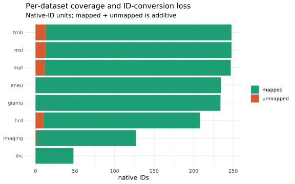
Patients per combination of datasets, from the sets built in setup by build_sets(): horizontal bars are each dataset’s patient count, the dot matrix names a combination, and the top bars count it. The intersections are exclusive — a column with dots on only {imaging, ihc} is patients with imaging and IHC and nothing else — so every patient falls in exactly one column and the top bars sum to the distinct-patient total.
upset(fromList(sets),
nsets = length(sets), nintersects = NA,
order.by = "freq",
mainbar.y.label = "patients in this EXACT combination",
sets.x.label = "patients per dataset",
text.scale = c(1.3, 1.2, 1.1, 1.0, 1.2, 1.1))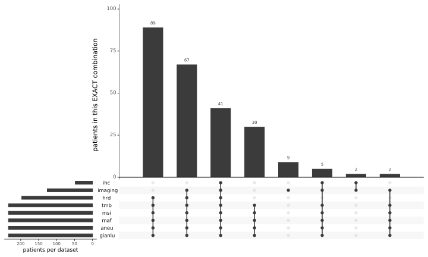
| Version | Author | Date |
|---|---|---|
| ed3a227 | sceriff0 | 2026-08-13 |
UpSet answers which combination; this answers how complete. For each k, the number of patients appearing in exactly k of the eight datasets. The right-most bar is the fully complete cohort and the left-most are single-modality patients — usually the number people actually want.
all_pids <- Reduce(union, sets)
membership <- sapply(sets, function(s) all_pids %in% s)
degree_tbl <- tibble(pid = all_pids, k = rowSums(membership))
ggplot(degree_tbl, aes(factor(k))) +
geom_bar(fill = attend_pal(1)) +
geom_text(stat = "count", aes(label = after_stat(count)), vjust = -0.3, size = 3.5) +
scale_y_continuous(expand = expansion(mult = c(0, 0.12))) +
labs(title = "Cohort completeness",
subtitle = paste0("n = ", nrow(degree_tbl), " patients across ", length(sets), " datasets"),
x = "Number of datasets a patient appears in (k)", y = "Patients (count)") +
attend_theme()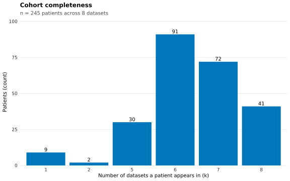
The per-patient view of the same information, read off the master’s
in_
presence <- master |>
select(pid, starts_with("in_")) |>
pivot_longer(-pid, names_to = "dataset", values_to = "present") |>
mutate(dataset = sub("^in_", "", dataset))
pid_order <- presence |> group_by(pid) |> summarise(k = sum(present), .groups = "drop") |>
arrange(k) |> pull(pid)
ggplot(presence, aes(dataset, factor(pid, levels = pid_order), fill = present)) +
geom_tile() +
scale_fill_manual(values = c(`TRUE` = attend_pal(1), `FALSE` = "grey93")) +
labs(title = "Patient x dataset availability",
subtitle = paste0("n = ", dplyr::n_distinct(presence$pid), " patients"),
x = NULL, y = "Patients (one row each)", fill = "present") +
attend_theme() +
theme(axis.text.y = element_blank(), axis.ticks.y = element_blank(),
axis.text.x = element_text(angle = 45, hjust = 1), panel.grid = element_blank())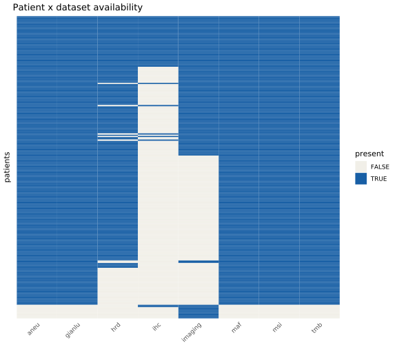
clinical_data and conversion_data are saved but are not in tables, so neither is harmonised into the master — only gianlu_clinical_data supplies clinical fields. This checks whether clinical_data’s IDs are even in pid space, which decides how much work joining it would be.
clin_ids <- unique(as.character(clinical_data$ID))
cat("clinical_data IDs that are in the pid union:",
sum(clin_ids %in% Reduce(union, sets)), "of", length(clin_ids), "\n")clinical_data IDs that are in the pid union: 176 of 197 A patient can be flagged in_tmb == TRUE and still have a missing or impossible TMB value, so presence and usability are checked separately.
Fraction of missing values per column of the master, worst first. A payload column near 1.0 is either an unset placeholder name or a modality that mostly failed to join.
col_missing <- master |>
summarise(across(everything(), ~ mean(is.na(.)))) |>
pivot_longer(everything(), names_to = "column", values_to = "frac_NA") |>
arrange(desc(frac_NA))
print(col_missing, n = Inf)# A tibble: 73 × 2
column frac_NA
<chr> <dbl>
1 gianlu__CLONAL_LOSS_AREA 0.824
2 ihc__n_cells 0.804
3 ihc__n_inside 0.804
4 ihc__n_tumor_total 0.804
5 ihc__n_tumor_inside 0.804
6 ihc__n_cd45_inside 0.804
7 ihc__n_cd3_inside 0.804
8 ihc__n_cd3cd45_inside 0.804
9 ihc__n_tumor_aridia_inside 0.804
10 ihc__n_pdl1_inside 0.804
11 ihc__n_tumor_pdl1_inside 0.804
12 ihc__n_cd45_pd1_inside 0.804
13 ihc__n_cd45_pdl1_inside 0.804
14 imaging__Tumor_cells_PDL1 0.514
15 imaging__Immune_infiltrate_PDL1 0.514
16 imaging__Immune_infiltrate_PD1 0.506
17 imaging__treatment 0.490
18 imaging__Neoplastic_cellularity 0.490
19 imaging__Immune_infiltrate 0.490
20 imaging__ARID1A 0.490
21 imaging__MMR_Status 0.490
22 imaging__PFS_Months 0.490
23 imaging__PFS_Event 0.490
24 imaging__patient_id 0.486
25 imaging__MSI_Status 0.486
26 hrd__LOH_Score 0.196
27 hrd__TAI_Score 0.196
28 hrd__LST_Score 0.196
29 hrd__HRD_Score 0.196
30 gianlu__HISTO_TYPE 0.110
31 gianlu__HISTO_GRADE 0.110
32 gianlu__FIGO 0.0531
33 aneu__aneuploidy_score 0.0490
34 gianlu__SEQ_CODE 0.0449
35 gianlu__MSI_STATUS 0.0449
36 gianlu__TREATMENT 0.0449
37 gianlu__RACE 0.0449
38 gianlu__MALIGNANCY 0.0449
39 gianlu__STATUS 0.0449
40 gianlu__NEOPLASTIC_CELLULARITY 0.0449
41 gianlu__IMMUNE_INFILTRATE 0.0449
42 gianlu__ARID1A 0.0449
43 gianlu__MLH1 0.0449
44 gianlu__PMS2 0.0449
45 gianlu__MSH6 0.0449
46 gianlu__MSH2 0.0449
47 gianlu__MMR_STATUS 0.0449
48 gianlu__PFS_EVENT 0.0449
49 gianlu__PFS_MONTHS 0.0449
50 tmb__TMB_SCORE 0.0449
51 msi__MSI_SCORE 0.0449
52 aneu__clinical_id 0.0449
53 aneu__other_id 0.0449
54 aneu__time 0.0449
55 aneu__status 0.0449
56 aneu__arm 0.0449
57 aneu__aneuploidy 0.0449
58 aneu__MMR_status 0.0449
59 mut_screened 0.0449
60 TP53_pathogenic 0.0449
61 panel_pathogenic 0.0449
62 tmb__TMB_robust 0.0449
63 tmb__TMB_matched 0.0449
64 tmb__TMB_nassar 0.0449
65 pid 0
66 in_tmb 0
67 in_msi 0
68 in_maf 0
69 in_hrd 0
70 in_aneu 0
71 in_gianlu 0
72 in_imaging 0
73 in_ihc 0 The same picture with a ranked plot (naniar) and a typed per-column summary (skimr). Both optional.
if (requireNamespace("naniar", quietly = TRUE)) {
print(naniar::miss_var_summary(master), n = 25)
print(naniar::gg_miss_var(master) +
ggplot2::labs(title = "Missingness per column (master)"))
} else note_skip("naniar not installed — skipping missingness summary/plot.")# A tibble: 73 × 3
variable n_miss pct_miss
<chr> <int> <num>
1 gianlu__CLONAL_LOSS_AREA 202 82.4
2 ihc__n_cells 197 80.4
3 ihc__n_inside 197 80.4
4 ihc__n_tumor_total 197 80.4
5 ihc__n_tumor_inside 197 80.4
6 ihc__n_cd45_inside 197 80.4
7 ihc__n_cd3_inside 197 80.4
8 ihc__n_cd3cd45_inside 197 80.4
9 ihc__n_tumor_aridia_inside 197 80.4
10 ihc__n_pdl1_inside 197 80.4
11 ihc__n_tumor_pdl1_inside 197 80.4
12 ihc__n_cd45_pd1_inside 197 80.4
13 ihc__n_cd45_pdl1_inside 197 80.4
14 imaging__Tumor_cells_PDL1 126 51.4
15 imaging__Immune_infiltrate_PDL1 126 51.4
16 imaging__Immune_infiltrate_PD1 124 50.6
17 imaging__treatment 120 49.0
18 imaging__Neoplastic_cellularity 120 49.0
19 imaging__Immune_infiltrate 120 49.0
20 imaging__ARID1A 120 49.0
21 imaging__MMR_Status 120 49.0
22 imaging__PFS_Months 120 49.0
23 imaging__PFS_Event 120 49.0
24 imaging__patient_id 119 48.6
25 imaging__MSI_Status 119 48.6
# ℹ 48 more rows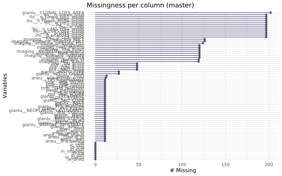
| Version | Author | Date |
|---|---|---|
| ed3a227 | sceriff0 | 2026-08-13 |
if (requireNamespace("skimr", quietly = TRUE)) skimr::skim(master) else
note_skip("skimr not installed — skipping typed EDA summary.")| Name | master |
| Number of rows | 245 |
| Number of columns | 73 |
| _______________________ | |
| Column type frequency: | |
| character | 31 |
| logical | 11 |
| numeric | 31 |
| ________________________ | |
| Group variables | None |
Variable type: character
| skim_variable | n_missing | complete_rate | min | max | empty | n_unique | whitespace |
|---|---|---|---|---|---|---|---|
| pid | 0 | 1.00 | 8 | 9 | 0 | 245 | 0 |
| gianlu__SEQ_CODE | 11 | 0.96 | 0 | 10 | 2 | 233 | 0 |
| gianlu__MSI_STATUS | 11 | 0.96 | 12 | 14 | 0 | 2 | 0 |
| gianlu__TREATMENT | 11 | 0.96 | 7 | 12 | 0 | 2 | 0 |
| gianlu__RACE | 11 | 0.96 | 5 | 25 | 0 | 3 | 0 |
| gianlu__MALIGNANCY | 11 | 0.96 | 14 | 21 | 0 | 2 | 0 |
| gianlu__HISTO_TYPE | 27 | 0.89 | 5 | 16 | 0 | 7 | 0 |
| gianlu__HISTO_GRADE | 27 | 0.89 | 1 | 13 | 0 | 5 | 0 |
| gianlu__STATUS | 11 | 0.96 | 9 | 15 | 0 | 2 | 0 |
| gianlu__ARID1A | 11 | 0.96 | 8 | 13 | 0 | 4 | 0 |
| gianlu__MLH1 | 11 | 0.96 | 8 | 8 | 0 | 2 | 0 |
| gianlu__PMS2 | 11 | 0.96 | 6 | 8 | 0 | 3 | 0 |
| gianlu__MSH6 | 11 | 0.96 | 6 | 8 | 0 | 3 | 0 |
| gianlu__MSH2 | 11 | 0.96 | 8 | 8 | 0 | 2 | 0 |
| gianlu__MMR_STATUS | 11 | 0.96 | 6 | 9 | 0 | 2 | 0 |
| gianlu__FIGO | 13 | 0.95 | 1 | 5 | 0 | 10 | 0 |
| gianlu__PFS_EVENT | 11 | 0.96 | 2 | 8 | 0 | 3 | 0 |
| imaging__patient_id | 119 | 0.51 | 10 | 35 | 0 | 126 | 0 |
| imaging__MSI_Status | 119 | 0.51 | 12 | 14 | 0 | 2 | 0 |
| imaging__treatment | 120 | 0.51 | 7 | 12 | 0 | 2 | 0 |
| imaging__ARID1A | 120 | 0.51 | 8 | 13 | 0 | 3 | 0 |
| imaging__MMR_Status | 120 | 0.51 | 6 | 9 | 0 | 2 | 0 |
| imaging__Tumor_cells_PDL1 | 126 | 0.49 | 9 | 18 | 0 | 2 | 0 |
| imaging__Immune_infiltrate_PDL1 | 126 | 0.49 | 9 | 19 | 0 | 3 | 0 |
| imaging__PFS_Months | 120 | 0.51 | 2 | 21 | 0 | 113 | 0 |
| imaging__PFS_Event | 120 | 0.51 | 2 | 8 | 0 | 3 | 0 |
| aneu__clinical_id | 11 | 0.96 | 8 | 9 | 0 | 234 | 0 |
| aneu__other_id | 11 | 0.96 | 0 | 11 | 68 | 167 | 0 |
| aneu__arm | 11 | 0.96 | 7 | 12 | 0 | 2 | 0 |
| aneu__aneuploidy | 11 | 0.96 | 0 | 4 | 1 | 3 | 0 |
| aneu__MMR_status | 11 | 0.96 | 6 | 9 | 0 | 2 | 0 |
Variable type: logical
| skim_variable | n_missing | complete_rate | mean | count |
|---|---|---|---|---|
| mut_screened | 11 | 0.96 | 1.00 | TRU: 234 |
| TP53_pathogenic | 11 | 0.96 | 0.34 | FAL: 154, TRU: 80 |
| panel_pathogenic | 11 | 0.96 | 0.21 | FAL: 185, TRU: 49 |
| in_tmb | 0 | 1.00 | 0.96 | TRU: 234, FAL: 11 |
| in_msi | 0 | 1.00 | 0.96 | TRU: 234, FAL: 11 |
| in_maf | 0 | 1.00 | 0.96 | TRU: 234, FAL: 11 |
| in_hrd | 0 | 1.00 | 0.80 | TRU: 197, FAL: 48 |
| in_aneu | 0 | 1.00 | 0.96 | TRU: 234, FAL: 11 |
| in_gianlu | 0 | 1.00 | 0.96 | TRU: 234, FAL: 11 |
| in_imaging | 0 | 1.00 | 0.51 | TRU: 126, FAL: 119 |
| in_ihc | 0 | 1.00 | 0.20 | FAL: 197, TRU: 48 |
Variable type: numeric
| skim_variable | n_missing | complete_rate | mean | sd | p0 | p25 | p50 | p75 | p100 | hist |
|---|---|---|---|---|---|---|---|---|---|---|
| gianlu__NEOPLASTIC_CELLULARITY | 11 | 0.96 | 50.00 | 20.98 | 5.00 | 30.00 | 50.00 | 68.75 | 95.00 | ▂▇▂▇▃ |
| gianlu__IMMUNE_INFILTRATE | 11 | 0.96 | 9.79 | 9.29 | 0.00 | 5.00 | 5.00 | 15.00 | 60.00 | ▇▂▁▁▁ |
| gianlu__CLONAL_LOSS_AREA | 202 | 0.18 | 41.63 | 27.77 | 5.00 | 20.00 | 30.00 | 60.00 | 95.00 | ▇▇▁▇▃ |
| gianlu__PFS_MONTHS | 11 | 0.96 | 13.46 | 11.44 | 0.03 | 6.22 | 9.03 | 18.06 | 53.06 | ▇▃▂▁▁ |
| imaging__Neoplastic_cellularity | 120 | 0.51 | 46.92 | 21.42 | 5.00 | 30.00 | 40.00 | 60.00 | 95.00 | ▂▇▂▆▂ |
| imaging__Immune_infiltrate | 120 | 0.51 | 8.70 | 8.48 | 0.00 | 5.00 | 5.00 | 10.00 | 40.00 | ▇▂▁▁▁ |
| imaging__Immune_infiltrate_PD1 | 124 | 0.49 | 6.93 | 11.35 | 0.00 | 0.00 | 1.00 | 10.00 | 50.00 | ▇▁▁▁▁ |
| ihc__n_cells | 197 | 0.20 | 1608904.92 | 1058211.78 | 44657.00 | 763313.00 | 1612289.50 | 2146611.25 | 3963219.00 | ▇▆▇▂▃ |
| ihc__n_inside | 197 | 0.20 | 720497.27 | 689057.60 | 9725.00 | 100818.75 | 657029.50 | 992346.25 | 3284193.00 | ▇▅▂▁▁ |
| ihc__n_tumor_total | 197 | 0.20 | 620041.85 | 480750.85 | 33537.00 | 284934.75 | 574799.00 | 777991.50 | 2575883.00 | ▇▇▂▁▁ |
| ihc__n_tumor_inside | 197 | 0.20 | 402460.79 | 410507.10 | 5891.00 | 51589.50 | 344902.50 | 557517.00 | 2344031.00 | ▇▃▁▁▁ |
| ihc__n_cd45_inside | 197 | 0.20 | 137904.48 | 171572.72 | 1880.00 | 21446.75 | 71296.50 | 159864.50 | 751971.00 | ▇▂▁▁▁ |
| ihc__n_cd3_inside | 197 | 0.20 | 98958.67 | 117047.13 | 1259.00 | 16194.50 | 64739.50 | 124034.25 | 537815.00 | ▇▂▁▁▁ |
| ihc__n_cd3cd45_inside | 197 | 0.20 | 75828.67 | 104664.01 | 503.00 | 10734.00 | 40922.00 | 87498.75 | 480913.00 | ▇▁▁▁▁ |
| ihc__n_tumor_aridia_inside | 197 | 0.20 | 47389.71 | 117999.18 | 23.00 | 1632.50 | 11393.00 | 35767.00 | 646175.00 | ▇▁▁▁▁ |
| ihc__n_pdl1_inside | 197 | 0.20 | 5103.79 | 11480.43 | 33.00 | 577.25 | 1999.00 | 4782.50 | 76762.00 | ▇▁▁▁▁ |
| ihc__n_tumor_pdl1_inside | 197 | 0.20 | 851.19 | 1286.37 | 4.00 | 62.25 | 287.50 | 1093.75 | 6651.00 | ▇▂▁▁▁ |
| ihc__n_cd45_pd1_inside | 197 | 0.20 | 17526.56 | 34373.19 | 15.00 | 608.50 | 2255.50 | 13630.00 | 157613.00 | ▇▁▁▁▁ |
| ihc__n_cd45_pdl1_inside | 197 | 0.20 | 4089.71 | 11173.48 | 15.00 | 274.75 | 1314.00 | 3637.50 | 74415.00 | ▇▁▁▁▁ |
| tmb__TMB_SCORE | 11 | 0.96 | 30.28 | 23.10 | 1.14 | 15.64 | 23.30 | 40.10 | 208.42 | ▇▂▁▁▁ |
| msi__MSI_SCORE | 11 | 0.96 | 11.72 | 14.17 | 0.00 | 0.87 | 3.02 | 22.82 | 50.87 | ▇▁▂▁▁ |
| hrd__LOH_Score | 48 | 0.80 | 7.92 | 8.29 | 0.00 | 2.00 | 5.00 | 12.00 | 54.00 | ▇▃▁▁▁ |
| hrd__TAI_Score | 48 | 0.80 | 11.83 | 6.44 | 1.00 | 8.00 | 11.00 | 16.00 | 37.00 | ▅▇▃▁▁ |
| hrd__LST_Score | 48 | 0.80 | 11.40 | 8.00 | 0.00 | 4.00 | 11.00 | 17.00 | 38.00 | ▇▇▅▁▁ |
| hrd__HRD_Score | 48 | 0.80 | 31.16 | 19.58 | 2.00 | 15.00 | 29.00 | 43.00 | 101.00 | ▇▇▅▁▁ |
| aneu__time | 11 | 0.96 | 13.46 | 11.44 | 0.03 | 6.22 | 9.03 | 18.06 | 53.06 | ▇▃▂▁▁ |
| aneu__status | 11 | 0.96 | 0.68 | 0.47 | 0.00 | 0.00 | 1.00 | 1.00 | 1.00 | ▃▁▁▁▇ |
| aneu__aneuploidy_score | 12 | 0.95 | 0.10 | 0.17 | 0.00 | 0.00 | 0.03 | 0.12 | 1.00 | ▇▁▁▁▁ |
| tmb__TMB_robust | 11 | 0.96 | 14.01 | 8.11 | 5.13 | 9.04 | 11.45 | 16.93 | 73.34 | ▇▂▁▁▁ |
| tmb__TMB_matched | 11 | 0.96 | 15.04 | 8.26 | 5.53 | 9.80 | 12.64 | 17.82 | 74.93 | ▇▂▁▁▁ |
| tmb__TMB_nassar | 11 | 0.96 | 13.03 | 8.27 | 3.68 | 7.75 | 10.58 | 15.72 | 78.29 | ▇▂▁▁▁ |
Range sanity on the four genomic score tables (data/-side, read back from the intermediates), computed before collapsing so a bad input value is not masked by averaging. Per numeric column: missing/zero/negative rates, observed range, distinct-value count, and a robust outlier count at median ± 5·MAD. The MAF is excluded — its numeric columns are genomic coordinates, where “range” means nothing.
score_tables <- list(tmb = tmb_data, msi = msi_data, hrd = hrd_data, aneu = aneu_data)
value_audit <- imap(score_tables, ~ numeric_audit(.x, .y)) |> bind_rows()
print(value_audit, n = Inf)# A tibble: 9 × 11
dataset column n pct_na n_distinct min median max pct_zero
<chr> <chr> <int> <dbl> <int> <dbl> <dbl> <dbl> <dbl>
1 tmb TMB_SCORE 248 0.4 242 0.13 23.2 208. 0
2 msi MSI_SCORE 248 0 188 0 3.47 50.9 1.2
3 hrd LOH_Score 208 0 34 0 5 54 7.2
4 hrd TAI_Score 208 0 29 1 10 37 0
5 hrd LST_Score 208 0 33 0 11 38 1.4
6 hrd HRD_Score 208 0 64 2 28 101 0
7 aneu time 235 0 186 0.0329 9.01 53.1 0
8 aneu status 235 0 2 0 1 1 31.5
9 aneu aneuploidy_score 235 0.4 62 0 0.0270 1 37.6
# ℹ 2 more variables: pct_negative <dbl>, n_outlier_mad <int>Optional hard domain bounds — anything outside [lower, upper] is flagged. Left empty so it runs as-is; the commented rows are a template with plausible ranges to confirm against the real definitions.
score_bounds <- tribble(
~dataset, ~column, ~lower, ~upper,
# "tmb", "TMB", 0, Inf, # mutations/Mb, non-negative
# "msi", "msi_score", 0, 1, # fraction of unstable loci
# "hrd", "HRD_score", 0, 100, # composite HRD score
# "aneu", "aneuploidy", 0, 1, # fraction of genome altered
)
if (nrow(score_bounds) > 0) {
pmap_dfr(score_bounds, function(dataset, column, lower, upper) {
df <- score_tables[[dataset]]
if (is.null(df) || !column %in% names(df))
return(tibble(dataset, column, status = "column not found",
n_violations = NA_integer_))
x <- suppressWarnings(as.numeric(df[[column]]))
tibble(dataset, column, status = "checked",
n_violations = sum(x < lower | x > upper, na.rm = TRUE))
})
} else {
note_skip("score_bounds empty — fill in column names to enable hard-bound checks.")
}NOTE: score_bounds empty — fill in column names to enable hard-bound checks.One histogram per numeric score column of the master, so these are the post-collapse values every downstream report sees. Look for impossible values, a spike at zero (a failed measurement coded as 0 rather than missing), and bimodality, which the mean collapse would blur.
score_long <- master |>
select(pid, matches("^(tmb|msi|hrd|aneu)__")) |>
select(pid, where(is.numeric)) |>
pivot_longer(-pid, names_to = "metric", values_to = "value") |>
filter(!is.na(value))
if (nrow(score_long) > 0) {
ggplot(score_long, aes(value)) +
geom_histogram(bins = 30, fill = attend_pal(1)) +
facet_wrap(~ metric, scales = "free", ncol = 3) +
labs(title = "Distributions of the genomic score columns (master)",
subtitle = paste0("Check for impossible values, spikes at 0, and bimodality; n = ",
dplyr::n_distinct(score_long$pid), " patients"),
x = "Score (units differ per panel; see 00-methods)", y = "Patients (count)") +
attend_theme()
} else {
note_skip("No numeric score columns matched in master — check column prefixes.")
}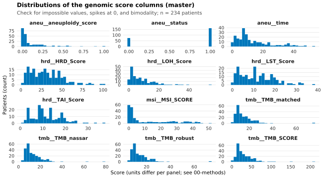
The continuous WES MSI score (msi__MSI_SCORE, percent unstable sites, from data/msi.20250831.csv) against the clinical MSI status the clinical table calls independently. The two arrive through different ID spaces — score through the barcode crosswalk, status through the patient id — so clean separation is positive evidence that the barcode-to-pid mapping is right, and overlap points at a linkage fault rather than biology. Wilcoxon rank-sum on the two groups.
msi_score_col <- "msi__MSI_SCORE" # continuous WES score; categorical = attend_cols$msi_status
if (have_cols(master, msi_score_col, attend_cols$msi_status)) {
msi_df <- master |>
transmute(pid,
status = .data[[attend_cols$msi_status]],
score = suppressWarnings(as.numeric(.data[[msi_score_col]]))) |>
filter(!is.na(status), !is.na(score))
p_lab <- tryCatch({
grp <- split(msi_df$score, msi_df$status)
if (length(grp) == 2)
sprintf("Wilcoxon p = %s",
format.pval(wilcox.test(grp[[1]], grp[[2]])$p.value, digits = 2, eps = 1e-4))
else NULL
}, error = function(e) NULL)
ggplot(msi_df, aes(status, score)) +
# points = FALSE: highlight_points() below supplies the partitioned point layer, so
# attend_box() contributes only the box (or, where a stratum is under n=10, the median
# crossbar) and the per-group n. The old fill was #A6CEE3 — which attend_plots.R defines
# as "aneuploidy-low", a meaning this figure does not have.
attend_box(msi_df, x = "status", y = "score", points = FALSE) +
highlight_points(msi_df, "status", "score", base_size = 0.7, base_alpha = 0.4, base_const = "black") +
labs(title = "WES MSI score by clinical MSI status",
subtitle = p_lab, x = "Clinical MSI status",
y = "WES MSI score (% unstable sites)") +
attend_theme()
} else {
note_skip("Both msi__MSI_SCORE and ", attend_cols$msi_status,
" must be in the master — skipping MSI concordance plot.")
}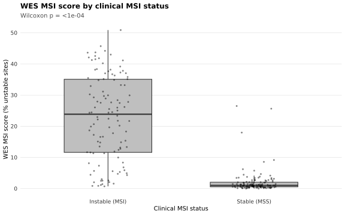
FlowPath counts individual cells on each IHC slide and turns them into positivity and composition fractions; a pathologist independently scored the same slides by eye. Whether those two agree is a measurement-validation question — the same kind of question Parts 1 and 2 ask of the join — so it belongs here rather than beside the biology it feeds. It runs on every imaged patient: restricting it to a molecular subgroup would only make it noisier.
Every composition figure in 04-aneuploidy-mmrd and 05-response, and the immune-content survival split in 02-survival, rest on the agreement measured below. ### Loading and mapping to patients
The FlowPath export is keyed by image_id, the imaging annotation sheet carries both image_id and the patient id, and the master is keyed by pid. Everything is put onto pid through the image crosswalk built in code/attend_harmonise.R — the same one 01-data-integration used, so this report’s cohort cannot drift from the master’s. The two counts below are the ceiling for everything that follows: rows that fail to map are invisible to every figure in this report.
id_cfg <- make_id_cfg()
cw_image_pid <- build_image_pid(imaging_data, id_cfg) # image -> pid
cw_barcode_pid <- build_barcode_pid(load_gianlu_clinical_data(), id_cfg)
pid_vector <- make_pid_vector(cw_barcode_pid, cw_image_pid)
ihc_pid <- ihc_data |> mutate(pid = pid_vector(ihc_data, id_cfg$ihc))
imaging_pid <- imaging_data |> mutate(pid = pid_vector(imaging_data, id_cfg$imaging))
cat("IHC rows mapped to a patient :", sum(!is.na(ihc_pid$pid)), "/", nrow(ihc_pid), "\n")IHC rows mapped to a patient : 48 / 48 cat("imaging rows mapped to a patient:", sum(!is.na(imaging_pid$pid)), "/", nrow(imaging_pid), "\n")imaging rows mapped to a patient: 126 / 134 Per-image FlowPath counts joined to the pathologist annotations, with the positivity/composition ratios derived by ihc_image_metrics() (code/attend_ihc.R). The summary table describes the cohort the IHC slides came from — not the whole ATTEND cohort, which is the relevant denominator here.
ihc_img <- ihc_image_metrics(ihc_data, imaging_data)
cat("IHC images joined to imaging annotations:", sum(!is.na(ihc_img$ID)), "/", nrow(ihc_img), "\n")IHC images joined to imaging annotations: 48 / 48 if (requireNamespace("gtsummary", quietly = TRUE)) {
ihc_img |>
select(any_of(c("MSI_Status", "treatment", "ARID1A", "MMR_Status"))) |>
gtsummary::tbl_summary()
}| Characteristic | N = 481 |
|---|---|
| MSI_Status | |
| Instable (MSI) | 41 (85%) |
| Stable (MSS) | 7 (15%) |
| treatment | |
| Atezolizumab | 30 (63%) |
| Placebo | 18 (38%) |
| ARID1A | |
| Clonal loss | 16 (33%) |
| Complete loss | 21 (44%) |
| Positive | 11 (23%) |
| MMR_Status | |
| Deficient | 41 (85%) |
| Intact | 7 (15%) |
| 1 n (%) | |
For these three, the pathologist also gave a number, so the two methods can be plotted against each other directly. Each point is one image. The dashed red line is x = y, perfect agreement: points systematically above it mean the pathologist scored higher than FlowPath, below it the reverse. Spearman’s rho measures whether the two rank images the same way, which is the weaker but more robust claim — a high rho with points far off the diagonal means consistent but miscalibrated.
Pathologist percentages are divided by 100 so both axes are fractions.
FlowPath tumour fraction = all tumour cells / all cells, against the pathologist’s neoplastic-cellularity percentage.
cc <- ihc_img |>
transmute(ID, # ID == pid; kept so the highlight can match
flowpath = tumor_over_all,
pathologist = suppressWarnings(as.numeric(Neoplastic_cellularity)) / 100) |>
filter(!is.na(flowpath), !is.na(pathologist))
if (nrow(cc) > 2) {
rho <- cor(cc$flowpath, cc$pathologist, method = "spearman", use = "complete.obs")
ggplot(cc, aes(flowpath, pathologist)) +
highlight_points(cc, "flowpath", "pathologist", jitter_width = 0, base_size = 1.5, base_alpha = 0.6) +
geom_abline(slope = 1, linetype = "dashed", colour = "grey40") +
coord_equal() +
annotate("text", x = -Inf, y = Inf, hjust = -0.2, vjust = 2,
label = paste0("Spearman = ", round(rho, 2))) +
labs(title = "Neoplastic cellularity", x = "FlowPath tumour fraction",
y = "Pathologist cellularity") +
attend_theme()
}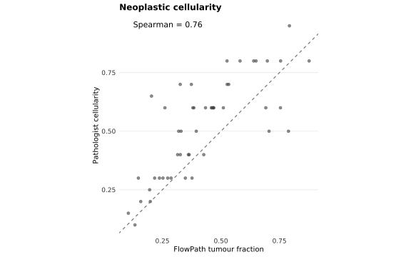
FlowPath immune content = CD45+ cells / all cells inside the annotation, against the pathologist’s immune-infiltrate percentage.
ii <- ihc_img |>
transmute(ID,
flowpath = cd45_over_inside,
pathologist = suppressWarnings(as.numeric(Immune_infiltrate)) / 100) |>
filter(!is.na(flowpath), !is.na(pathologist))
if (nrow(ii) > 2) {
rho <- cor(ii$flowpath, ii$pathologist, method = "spearman", use = "complete.obs")
ggplot(ii, aes(flowpath, pathologist)) +
highlight_points(ii, "flowpath", "pathologist", jitter_width = 0, base_size = 1.5, base_alpha = 0.6) +
geom_abline(slope = 1, linetype = "dashed", colour = "grey40") +
coord_equal() +
annotate("text", x = -Inf, y = Inf, hjust = -0.2, vjust = 2,
label = paste0("Spearman = ", round(rho, 2))) +
labs(title = "Immune infiltrate", x = "FlowPath CD45 fraction (inside)",
y = "Pathologist immune infiltrate") +
attend_theme()
}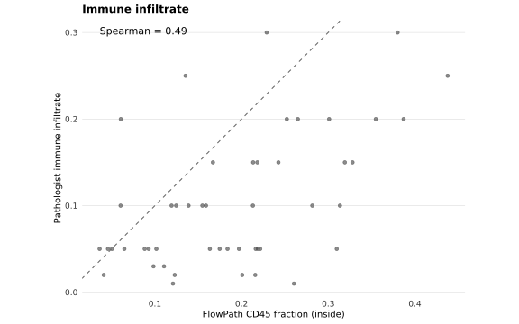
FlowPath PD-1+ immune = PD-1+ CD45 cells / CD45 cells inside the annotation. A linear trend line replaces the x = y line here, because the pathologist’s PD-1 score is not on the same scale as the FlowPath fraction — only the ranking is comparable.
pd1 <- ihc_img |>
transmute(ID,
flowpath = cd45_pd1_over_cd45_inside,
pathologist = suppressWarnings(as.numeric(Immune_infiltrate_PD1)) / 100) |>
filter(!is.na(flowpath), !is.na(pathologist))
if (nrow(pd1) > 2) {
rho <- cor(pd1$flowpath, pd1$pathologist, method = "spearman", use = "complete.obs")
ggplot(pd1, aes(flowpath, pathologist)) +
highlight_points(pd1, "flowpath", "pathologist", jitter_width = 0, base_size = 1.5, base_alpha = 0.6) +
geom_smooth(method = "lm", se = FALSE, colour = "grey40", linewidth = 0.6) +
annotate("text", x = -Inf, y = Inf, hjust = -0.2, vjust = 2,
label = paste0("Spearman = ", round(rho, 2))) +
labs(title = "PD-1 on immune cells", x = "FlowPath PD-1+ / CD45 (inside)",
y = "Pathologist PD-1 infiltrate") +
attend_theme()
}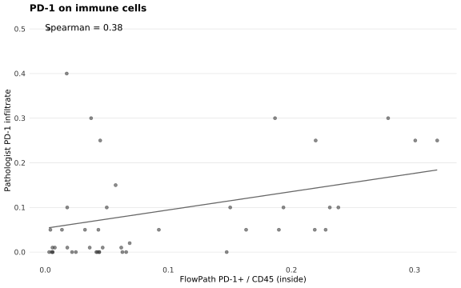
For these three the pathologist gave a category, not a number, so the comparison is a boxplot: the FlowPath fraction distribution within each pathologist call. Concordance looks like boxes that step monotonically across the categories. Overlapping boxes mean the automated fraction does not reproduce the call.
FlowPath ARID1A+ = ARID1A+ tumour cells / tumour cells inside the annotation. The pathologist’s categories run from complete loss through clonal loss to positive, so the FlowPath fraction should increase left to right.
if ("ARID1A" %in% names(ihc_img)) {
d <- ihc_img |>
mutate(ARID1A = factor(ARID1A, levels = c("Complete loss", "Clonal loss", "Positive"))) |>
filter(!is.na(ARID1A), !is.na(tumor_aridia_over_tumor_inside))
# `colour = ARID1A` duplicated the x axis, spending the palette and a whole "Pathologist"
# legend on information the ticks already carry. Points come from highlight_points(); the
# pathologist categories are small (e.g. "Complete loss"), so attend_box() picks the mark.
ggplot(d, aes(ARID1A, tumor_aridia_over_tumor_inside)) +
attend_box(d, x = "ARID1A", y = "tumor_aridia_over_tumor_inside", points = FALSE) +
highlight_points(d, "ARID1A", "tumor_aridia_over_tumor_inside", base_const = "black",
jitter_width = 0.2, base_size = 1.5, base_alpha = 0.6) +
labs(title = "ARID1A on tumour cells", x = NULL,
y = "FlowPath ARID1A+ tumour cells (fraction)") +
attend_theme()
}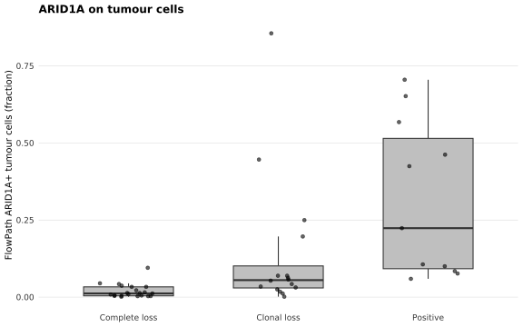
FlowPath PD-L1+ immune = PD-L1+ CD45 cells / CD45 cells inside. The pathologist’s IC categories are explicit percentage bands (IC0 < 1%, IC1 1–5%, IC2 5–10%), so this is the strictest of the categorical checks — the FlowPath fraction should land inside the named band, not merely increase across bands.
if ("Immune_infiltrate_PDL1" %in% names(ihc_img)) {
d <- ihc_img |>
mutate(Immune_infiltrate_PDL1 = factor(Immune_infiltrate_PDL1,
levels = c("", "IC0 (<1%)", "IC1 (>=1% and <5%)", "IC2 (>=5% and <10%)"))) |>
filter(!is.na(Immune_infiltrate_PDL1), !is.na(cd45_pdl1_over_cd45_inside))
ggplot(d, aes(Immune_infiltrate_PDL1, cd45_pdl1_over_cd45_inside)) +
attend_box(d, x = "Immune_infiltrate_PDL1", y = "cd45_pdl1_over_cd45_inside", points = FALSE) +
highlight_points(d, "Immune_infiltrate_PDL1", "cd45_pdl1_over_cd45_inside",
base_const = "black",
jitter_width = 0.2, base_size = 1.5, base_alpha = 0.6) +
labs(title = "PD-L1 on immune cells", x = NULL,
y = "FlowPath PD-L1+ CD45 cells (fraction)") +
attend_theme()
}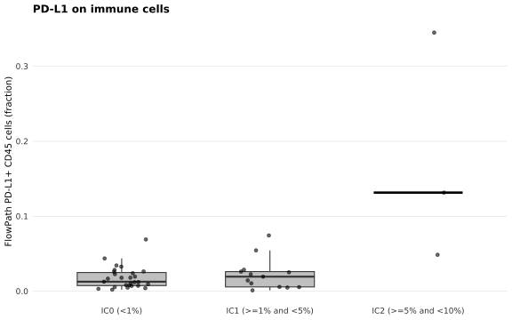
FlowPath PD-L1+ tumour = PD-L1+ tumour cells / tumour cells inside the annotation.
if ("Tumor_cells_PDL1" %in% names(ihc_img)) {
d <- ihc_img |>
filter(!is.na(Tumor_cells_PDL1), Tumor_cells_PDL1 != "", !is.na(tumor_pdl1_over_tumor_inside))
ggplot(d, aes(Tumor_cells_PDL1, tumor_pdl1_over_tumor_inside)) +
attend_box(d, x = "Tumor_cells_PDL1", y = "tumor_pdl1_over_tumor_inside", points = FALSE) +
highlight_points(d, "Tumor_cells_PDL1", "tumor_pdl1_over_tumor_inside",
base_const = "black",
jitter_width = 0.2, base_size = 1.5, base_alpha = 0.6) +
labs(title = "PD-L1 on tumour cells", x = NULL,
y = "FlowPath PD-L1+ tumour cells (fraction)") +
attend_theme() +
theme(axis.text.x = element_text(angle = 20, hjust = 1))
}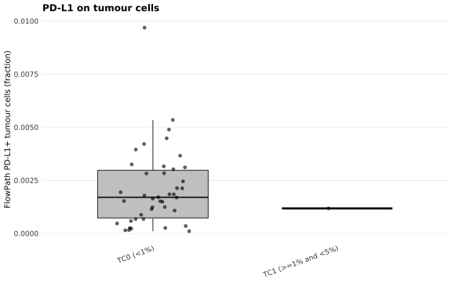
Everything above is per image. A patient can contribute several images, so the metrics are collapsed to one row per patient (mean across that patient’s images) before being used against patient-level variables. ihc_patient_metrics() is the entry point 02-survival and 04-aneuploidy-mmrd call to get the same per-patient values.
ihc_pt <- ihc_patient_metrics(ihc_data, imaging_data)
glimpse(ihc_pt)Rows: 48
Columns: 7
$ pid <chr> "0101-005", "0101-007", "0101-010", "01…
$ tumor_over_all <dbl> 0.3152985, 0.1048114, 0.1985659, 0.6918…
$ cd45_over_inside <dbl> 0.06040798, 0.19704487, 0.25222497, 0.3…
$ tumor_aridia_over_tumor_inside <dbl> 0.015536721, 0.059361196, 0.022086530, …
$ tumor_pdl1_over_tumor_inside <dbl> 0.0044826845, 0.0030241250, 0.001245154…
$ cd45_pd1_over_cd45_inside <dbl> 0.024887759, 0.004196315, 0.044679154, …
$ cd45_pdl1_over_cd45_inside <dbl> 0.024006777, 0.007297938, 0.005746362, …sessionInfo()R version 4.3.2 (2023-10-31)
Platform: x86_64-pc-linux-gnu (64-bit)
Running under: Rocky Linux 9.5 (Blue Onyx)
Matrix products: default
BLAS/LAPACK: FlexiBLAS OPENBLAS; LAPACK version 3.11.0
locale:
[1] LC_CTYPE=C.UTF-8 LC_NUMERIC=C LC_TIME=C.UTF-8
[4] LC_COLLATE=C.UTF-8 LC_MONETARY=C.UTF-8 LC_MESSAGES=C.UTF-8
[7] LC_PAPER=C.UTF-8 LC_NAME=C LC_ADDRESS=C
[10] LC_TELEPHONE=C LC_MEASUREMENT=C.UTF-8 LC_IDENTIFICATION=C
time zone: Europe/Rome
tzcode source: system (glibc)
attached base packages:
[1] stats graphics grDevices utils datasets methods base
other attached packages:
[1] data.table_1.18.4 readxl_1.5.0 UpSetR_1.4.1 fs_2.1.0
[5] here_1.0.2 lubridate_1.9.5 forcats_1.0.1 stringr_1.6.0
[9] dplyr_1.2.1 purrr_1.0.2 readr_2.2.0 tidyr_1.3.2
[13] tibble_3.3.1 ggplot2_4.0.3 tidyverse_2.0.0
loaded via a namespace (and not attached):
[1] tidyselect_1.2.1 farver_2.1.2 S7_0.2.2 fastmap_1.2.0
[5] promises_1.5.0 digest_0.6.39 timechange_0.4.0 lifecycle_1.0.5
[9] magrittr_2.0.5 compiler_4.3.2 rlang_1.2.0 sass_0.4.10
[13] tools_4.3.2 utf8_1.2.6 yaml_2.3.12 gt_1.3.0
[17] knitr_1.51 skimr_2.2.2 labeling_0.4.3 bit_4.6.0
[21] plyr_1.8.9 xml2_1.5.2 repr_1.1.7 RColorBrewer_1.1-3
[25] workflowr_1.7.2 withr_3.0.3 grid_4.3.2 git2r_0.33.0
[29] gtsummary_2.5.1 scales_1.4.0 dichromat_2.0-0.1 cli_3.6.6
[33] rmarkdown_2.31 crayon_1.5.3 pointblank_0.12.4 generics_0.1.4
[37] otel_0.2.0 stringdist_0.9.17 rstudioapi_0.15.0 tzdb_0.5.0
[41] commonmark_2.0.0 cachem_1.1.0 splines_4.3.2 parallel_4.3.2
[45] cellranger_1.1.0 base64enc_0.1-3 vctrs_0.7.3 Matrix_1.6-4
[49] jsonlite_2.0.0 naniar_1.1.0 litedown_0.9 hms_1.1.4
[53] bit64_4.8.6 visdat_0.6.0 reclin2_0.6.0 jquerylib_0.1.4
[57] glue_1.8.1 blastula_0.3.6 stringi_1.8.7 gtable_0.3.6
[61] later_1.4.8 pillar_1.11.1 htmltools_0.5.9 R6_2.6.1
[65] rprojroot_2.1.1 lattice_0.22-5 vroom_1.7.1 evaluate_1.0.5
[69] lpSolve_5.6.23 markdown_2.0 cards_0.8.0 httpuv_1.6.12
[73] bslib_0.9.0 Rcpp_1.1.1-1.1 gridExtra_2.3.1 nlme_3.1-164
[77] mgcv_1.9-0 whisker_0.4.1 xfun_0.58 pkgconfig_2.0.3
sessionInfo()R version 4.3.2 (2023-10-31)
Platform: x86_64-pc-linux-gnu (64-bit)
Running under: Rocky Linux 9.5 (Blue Onyx)
Matrix products: default
BLAS/LAPACK: FlexiBLAS OPENBLAS; LAPACK version 3.11.0
locale:
[1] LC_CTYPE=C.UTF-8 LC_NUMERIC=C LC_TIME=C.UTF-8
[4] LC_COLLATE=C.UTF-8 LC_MONETARY=C.UTF-8 LC_MESSAGES=C.UTF-8
[7] LC_PAPER=C.UTF-8 LC_NAME=C LC_ADDRESS=C
[10] LC_TELEPHONE=C LC_MEASUREMENT=C.UTF-8 LC_IDENTIFICATION=C
time zone: Europe/Rome
tzcode source: system (glibc)
attached base packages:
[1] stats graphics grDevices utils datasets methods base
other attached packages:
[1] data.table_1.18.4 readxl_1.5.0 UpSetR_1.4.1 fs_2.1.0
[5] here_1.0.2 lubridate_1.9.5 forcats_1.0.1 stringr_1.6.0
[9] dplyr_1.2.1 purrr_1.0.2 readr_2.2.0 tidyr_1.3.2
[13] tibble_3.3.1 ggplot2_4.0.3 tidyverse_2.0.0
loaded via a namespace (and not attached):
[1] tidyselect_1.2.1 farver_2.1.2 S7_0.2.2 fastmap_1.2.0
[5] promises_1.5.0 digest_0.6.39 timechange_0.4.0 lifecycle_1.0.5
[9] magrittr_2.0.5 compiler_4.3.2 rlang_1.2.0 sass_0.4.10
[13] tools_4.3.2 utf8_1.2.6 yaml_2.3.12 gt_1.3.0
[17] knitr_1.51 skimr_2.2.2 labeling_0.4.3 bit_4.6.0
[21] plyr_1.8.9 xml2_1.5.2 repr_1.1.7 RColorBrewer_1.1-3
[25] workflowr_1.7.2 withr_3.0.3 grid_4.3.2 git2r_0.33.0
[29] gtsummary_2.5.1 scales_1.4.0 dichromat_2.0-0.1 cli_3.6.6
[33] rmarkdown_2.31 crayon_1.5.3 pointblank_0.12.4 generics_0.1.4
[37] otel_0.2.0 stringdist_0.9.17 rstudioapi_0.15.0 tzdb_0.5.0
[41] commonmark_2.0.0 cachem_1.1.0 splines_4.3.2 parallel_4.3.2
[45] cellranger_1.1.0 base64enc_0.1-3 vctrs_0.7.3 Matrix_1.6-4
[49] jsonlite_2.0.0 naniar_1.1.0 litedown_0.9 hms_1.1.4
[53] bit64_4.8.6 visdat_0.6.0 reclin2_0.6.0 jquerylib_0.1.4
[57] glue_1.8.1 blastula_0.3.6 stringi_1.8.7 gtable_0.3.6
[61] later_1.4.8 pillar_1.11.1 htmltools_0.5.9 R6_2.6.1
[65] rprojroot_2.1.1 lattice_0.22-5 vroom_1.7.1 evaluate_1.0.5
[69] lpSolve_5.6.23 markdown_2.0 cards_0.8.0 httpuv_1.6.12
[73] bslib_0.9.0 Rcpp_1.1.1-1.1 gridExtra_2.3.1 nlme_3.1-164
[77] mgcv_1.9-0 whisker_0.4.1 xfun_0.58 pkgconfig_2.0.3